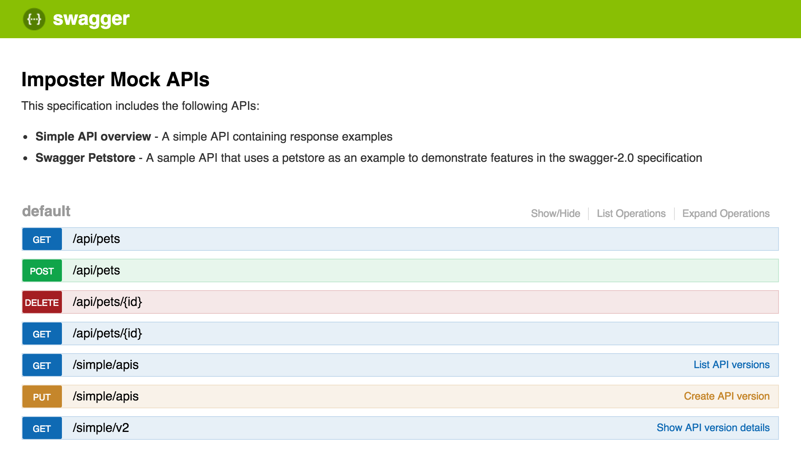

OpenAPI (and Swagger) plugin
- Plugin name:
openapi - Plugin class:
io.gatehill.imposter.plugin.openapi.OpenApiPluginImpl
This plugin provides support for OpenAPI (and Swagger) specifications.
Features
- Creates mock endpoints from OpenAPI/Swagger v2 and OpenAPI v3 API specifications.
- Serves response examples embedded in the specification.
- Optionally validates your HTTP requests to ensure they match the OpenAPI specification.
- Supports custom responses, headers, status codes etc. based on path, querystring, request headers, request body and more.
- Also supports script-driven responses for maximum control, in either JavaScript or Groovy.
- Provides an interactive API sandbox at
/_spec
Using the plugin
A great way to use this plugin is to take advantage of the built in examples feature of OpenAPI/Swagger files. These provide a standard way to document sample responses for each API response.
This plugin will match the example to serve using a combination of:
- matching URI/path
- matching HTTP method
- matching content type in
AcceptHTTP request header to theproducesproperty of the response - matching status code to the response
Imposter will return the first response found that matches the path and method. You can, of course, override the behaviour by setting the status code for a given combination of path and method (see below).
Typically, you will use the configuration file <something>-config.yaml to override the status code, and thus the content of the response, however, you can use the in-built script engine to gain further control of the response data, headers etc. (see below).
You can also use the interactive API sandbox at /_spec; e.g. http://localhost:8080/_spec, which looks like this:

Example
Here is an example configuration file:
# petstore-config.yaml
---
plugin: openapi
specFile: petstore.yaml
In this example, we are using an OpenAPI specification file (petstore.yaml) containing the following API:
swagger: "2.0"
info:
version: "1.0.0"
title: "Swagger Petstore"
consumes:
- "application/json"
produces:
- "application/json"
paths:
/pets:
get:
description: "Returns all pets from the system"
produces:
- "application/json"
responses:
"200":
description: "A list of pets."
schema:
type: "array"
items:
$ref: "#/definitions/Pet"
examples:
application/json: |-
[
{
"id": 101,
"name": "Cat"
},
{
"id": 102,
"name": "Dog"
}
]
definitions:
Pet:
type: "object"
required:
- "id"
- "name"
properties:
id:
type: "integer"
format: "int64"
name:
type: "string"
A few things to call out:
- We’ve defined the endpoint
/petsas expecting an HTTP GET request - We’ve said it will produce JSON responses
- One response is defined for the HTTP 200 case
- We’ve defined a data model in the definitions section
- We’ve provided an example response — the same JSON array described earlier
Start Imposter with the OpenAPI plugin
The OpenAPI plugin is bundled with the core Imposter distribution.
Let's assume your configuration is in the directory: examples/openapi/simple. Here are a few ways to start a mock running on port 8080.
CLI example:
imposter up -p 8080 ./examples/openapi/simple
Docker example:
docker run --rm -ti -p 8080:8080 \
-v $PWD/examples/openapi/simple:/opt/imposter/config \
outofcoffee/imposter
Java JAR example:
java -jar distro/openapi/build/libs/imposter.jar \
--configDir ./examples/openapi/simple
This starts a mock server using the OpenAPI plugin. Responses are served based on the OpenAPI specification petstore.yaml.
Using the example above, you can interact with the APIs with examples in the Swagger specification at their respective endpoints under http://localhost:8080/<endpoint path>.
Send an HTTP request to the /pets path defined in the configuration file to see the example response:
$ curl -v "http://localhost:8080/pets"
...
HTTP/1.1 200 OK
...
[
{
"id": 101,
"name": "Cat"
},
{
"id": 102,
"name": "Dog"
}
]
For specific information about the endpoints, see the interactive sandbox at http://localhost:8080/_spec.
Once you're finished, stop the server with CTRL+C.
For more working examples, see:
Validating requests against the specification
Imposter allows you to validate your HTTP requests to ensure they match the OpenAPI specification.
To enable this, set the validation.request configuration option to true:
# validating-request-config.yaml
---
plugin: "openapi"
specFile: "example-spec.yaml"
validation:
request: true
Now, for every incoming request to a valid combination of path and HTTP method, Imposter will validate the request parameters, headers and body against the corresponding part of the specification.
If a request fails validation, Imposter logs the validation errors then responds with an HTTP 400 status and, optionally, a report of the errors.
For example, let's make an HTTP request to an endpoint whose specification requires a request body and also requires a header, named 'X-Correlation-ID':
$ curl -v -X POST http://localhost:8080/pets
Note that our request does not provide either a request body or header.
This results in the following log entries:
WARN i.g.i.p.o.s.SpecificationServiceImpl - Validation failed for POST /pets: Validation failed.
[ERROR][REQUEST][POST /pets @header.X-CorrelationID] Header parameter 'X-CorrelationID' is required on path '/pets' but not found in request.
[ERROR][REQUEST][POST /pets @body] A request body is required but none found.
...and the following HTTP response:
HTTP/1.1 400 Bad Request
Content-Type: text/plain
Content-Length: 261
Request validation failed:
[ERROR][REQUEST][POST /pets @header.X-CorrelationID] Header parameter 'X-CorrelationID' is required on path '/pets' but not found in request.
[ERROR][REQUEST][POST /pets @body] A request body is required but none found.
This is because in the corresponding part of the OpenAPI specification, both the header and request body are marked as required.
Note that if the request body were provided, its structure would be validated against the corresponding schema entry.
For more information about validation, including how to ignore certain conditions, see the OpenAPI validation document.
Overriding status code
Sometimes you might want to force a particular status code to be returned, or use other specific behaviours. To do this, you can use the resources configuration:
# override-status-code-config.yaml
---
plugin: "openapi"
specFile: "spec-with-multiple-status-codes.yaml"
resources:
- path: "/pets"
method: post
response:
statusCode: 201
- path: "/pets/:petId"
method: put
response:
statusCode: 202
Here, POST requests to the /pets endpoint will default to the HTTP 201 status code. If there is a corresponding response example for the 201 status, this will be returned in the HTTP response.
The path property supports placeholders, using the Vert.x Web colon format, so in the second example above, PUT requests to the endpoint /pets/<some ID> will return a 202 status.
Return a specific example
You can make Imposter select a specific example to use as the response body.
# override-examples-config.yaml
---
plugin: "openapi"
specFile: "spec-with-multiple-examples.yaml"
resources:
- path: /pets/1
method: get
response:
exampleName: catExample
- path: /pets/2
method: get
response:
exampleName: dogExample
Return a custom response
You can also specify a static response file to use instead of an example:
# ... as above ...
- path: /pets/3
method: get
response:
file: tortoise.json
statusCode: 200
Return a literal string
You can also specify a literal string to return as the response body:
# ... as above ...
- path: /pets/4
method: get
response:
content: '{ "foo": "bar" }'
Conditional responses
You can control response behaviour based on the value of query parameters, path parameters, headers or body content.
# override-examples-config.yaml
---
plugin: "openapi"
specFile: "spec-with-multiple-status-codes.yaml"
resources:
# return HTTP 200 if request includes query parameter 'foo=bar'
- path: "/pets"
method: "get"
queryParams:
foo: bar
response:
statusCode: 200
# default to HTTP 400 response
- path: "/pets"
method: "get"
response:
statusCode: 400
First example
Here we expect an HTTP 200 status code, given the matching query string.
$ curl -v -X POST http://localhost:8080/pets?foo=bar
HTTP/1.1 200 OK
Second example
Here we expect an HTTP 400 status code.
$ curl -v -X POST http://localhost:8080/pets
HTTP/1.1 400 Bad Request
Object response examples
Imposter has basic support for response examples defined as objects, for example an API specification like object-examples.yaml - see examples/openapi/object-examples.
The salient part of the response is as follows:
responses:
"200":
description: team response
schema:
type: object
items:
$ref: '#/definitions/Team'
examples:
application/json:
id: 10
name: Engineering
Note that the example is specified as an object, rather than literal JSON.
Imposter currently supports JSON and YAML serialised content types in the response if they are specified in this way. If you want to return a different format, return a literal string, such as those above.
Setting a path prefix
It is possible to set a prefix for the paths within an OpenAPI specification. This is helpful to avoid clashes when including more than one specification containing identical paths. To set the prefix, use the path property at the top of the configuration file.
For example, to add the prefix /example before each path within the OpenAPI specification spec.yaml, set the path in your configuration file:
# imposter-config.yaml
---
plugin: openapi
specFile: spec.yaml
# set a prefix for all paths in the spec above
path: /example
Given an OpenAPI specification such as:
# spec.yaml
---
openapi: "3.0.0"
# ... info etc. omitted for brevity
paths:
/pets/{petId}:
# ...operation details
...then the path /pets/{petId} would be accessible at the path:
/example/pets/{petId}
Interaction of OpenAPI servers and Imposter basePath
If an OpenAPI specification lists servers with URLs containing a path, then matching of resources in the Imposter configuration file relies upon setting the Imposter basePath property.
For example, if the first server entry in the OpenAPI specification had a URL set to https://example.com/api, then the Imposter basePath should be /api.
Similarly, if the OpenAPI server URL were set to /api, then the Imposter basePath should be /api.
Note that only the first server entry in the OpenAPI
serversarray is examined for its path.
Scripted responses (advanced)
For more advanced scenarios, you can also control Imposter's responses using JavaScript or Groovy scripts.
See the Scripting section for more information.
For a simple script, see examples/openapi/scripted-named-example for a working example.
Additional context objects
This plugin adds objects to the script context:
| Object | Type | Description |
|---|---|---|
operation |
io.swagger.v3.oas.models.Operation |
The OpenAPI operation for the request. |
Example
Here we set the response.scriptFile property in the configuration file:
# scripted-openapi-config.yaml
---
plugin: openapi
specFile: petstore.yaml
response:
scriptFile: example.groovy
As a reminder, you can use either JavaScript (
.js) or Groovy (.groovy) languages for your scripts.
Now, example.groovy can control the responses, such as:
- a specific OpenAPI example name to return
respond().withExampleName('example1')
- the content of a file to return
respond().withFile('some-file.json')
- a literal string to return
respond().withContent('{ "foo": "bar" }')
Returning a named example
OpenAPI specifications allow API authors to provide examples of requests, responses, parameters and schema items.
You can return a specific named example from the specification in your script using the withExampleName(String) method.
if (context.request.pathParams.petId == '2') {
respond().withExampleName('dogExample')
}
This selects the example from the OpenAPI examples section for the API response.
paths:
/pets/{petId}:
get:
# (...some parts of operation excluded for brevity)
responses:
'200':
content:
application/json:
schema:
$ref: "#/components/schemas/Pet"
examples:
# the example to return is selected by the script
catExample:
value: |-
{ "id": 1, "name": "Cat" }
dogExample:
value: |-
{ "id": 2, "name": "Dog" }
Examples
Configuration reference
In addition to the standard configuration file options, the following additional properties are supported.
| Configuration name | Purpose | Default value |
|---|---|---|
isPickFirstIfNoneMatch |
(Optional) If no exact match is found for an example in a operation, based on matching name to accepted content types, choose the first item found from specification. | false |
path |
(Optional) A string to prepend to each operation's path. | Empty |
specFile |
(Required) path to OpenAPI specification file (see below). | Empty |
stripServerPath |
(Optional) Whether to remove the path component from the OpenAPI servers entries from the mock resource paths. |
false |
validation |
(Optional) Controls request validation - see Validation. | Empty |
OpenAPI specification locations
OpenAPI files can be provided as a relative file, an HTTP(S) URL or a file in an S3 bucket.
Some examples:
A file in the same directory as the configuration file:
plugin: openapi
specFile: sample_spec.yaml
At a URL:
plugin: openapi
specFile: https://example.com/sample_spec.yaml
In an S3 bucket:
plugin: openapi
specFile: s3://example-bucket/sample_spec.yaml
When using S3, set up your AWS profile/region/credentials as per standard AWS practice. For example, using an instance profile in EC2, environment variables or the various local environment configuration locations for providing AWS credentials.
Note: Remote specification files can be cached locally by setting the environment variable
IMPOSTER_OPENAPI_REMOTE_FILE_CACHE=true.